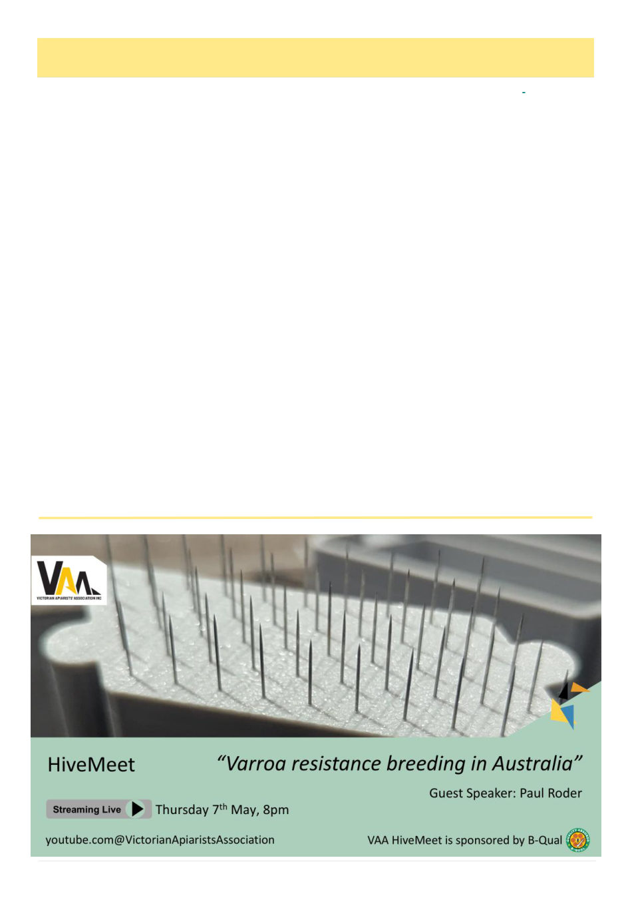

6
Australian Bee Journal
President’s Report, cont’d
2026 Annual Conference and AGM
— registrations now open.
Registrations are now open for the VAA 2026 An-
nual Conference and AGM, to be held Thursday 4 June
to Saturday 6 June 2026. I encourage all members to
secure their place early. Now is the time to lean into
new ideas, new directions and new beekeeping friend-
ships.
This year's Conference features four major themes:
Resources, Biosecurity, Industry Outlook, and Quality
Assurance. We are delighted to welcome an outstand-
ing lineup of international and Australian experts.
Dr. Peter Neumann, Vinetum Professor at the Insti-
tute of Bee Health and President of the COLOSS Asso-
ciation, will bring his expertise in bee health and the
behavioural and molecular ecology of honey bees and
their pathogens.
Professor Stephen Martin, whose four decades of
research on Varroa destructor and bee viruses has
shaped scientific and beekeeping practice worldwide,
will also present in person.
Rounding out this impressive program is Dr. Cooper
Schouten, Senior Research Fellow and Director of the
Southern Cross University Bee Research and Extension
Lab, recognised internationally for his leadership in
honeybee biosecurity, invasive mite preparedness, and
sustainable agribusiness systems.
For recreational, hobby, and sideliner beekeepers
who are unable to attend on Friday, there is a Saturday
program to run concurrently with a commercial quality-
assurance program.
Varroa Specialist Advanced Workshop.
Registration is also now open for the Varroa Spe-
cialist Advanced Workshop, tailored for all beekeepers.
This workshop is also highly suitable for anyone per-
forming the role of biosecurity officer for local and re-
gional bee clubs. I encourage members in these roles to
take advantage of this opportunity to build their skills
and confidence.
Board nominations — your industry needs you!
By the time you read this, the VAA Returning Of-
ficer will have called for nominations for places on the
VAA Board for the 2026–2027 association year. If you
want to make a real impact on our industry, I encourage
you to consider putting your name forward. VAA has
represented Victoria’s beekeepers since 1892. Our in-
dustry needs leaders that avoid the blame game, who
can take responsibility with a focus on problem solving.
If a full board role is not possible right now, VAA
has a number of subcommittees, projects, and initia-
tives that can only move forward with people from our
community willing to contribute time, expertise, and
commitment. If you would like to get involved in any
capacity, please don't hesitate to reach out.
These are challenging times, no doubt about it. I
often draw on advice from a good friend of mine who
taught me a belief that no matter how hard things get,
“we always win”. I remain confident in the resilience
and resourcefulness of our beekeeping community. I
can be contacted on 0429 857 835 should you wish to
talk. Beekeepers first.
Lindsay Callaway
President, Victorian Apiarists' Association
(Continued from page 5)